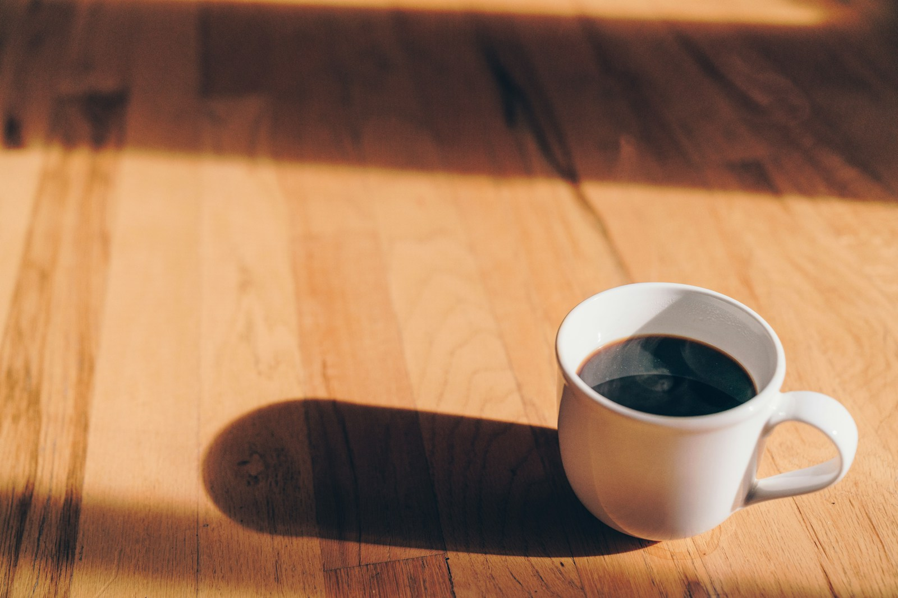
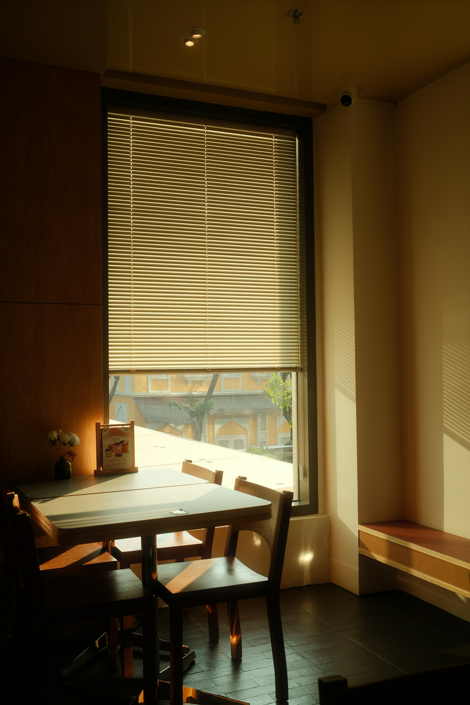
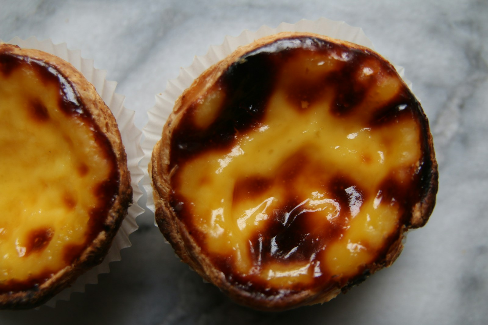

Café do Largo
Um lugar para ficar.

O café
Há sítios onde a pausa se torna um hábito. Um café acabado de tirar, uma mesa junto à luz e uma conversa que não tem hora para acabar.
Ambiente



Visitar
A morada, o horário e o contacto serão publicados aqui.